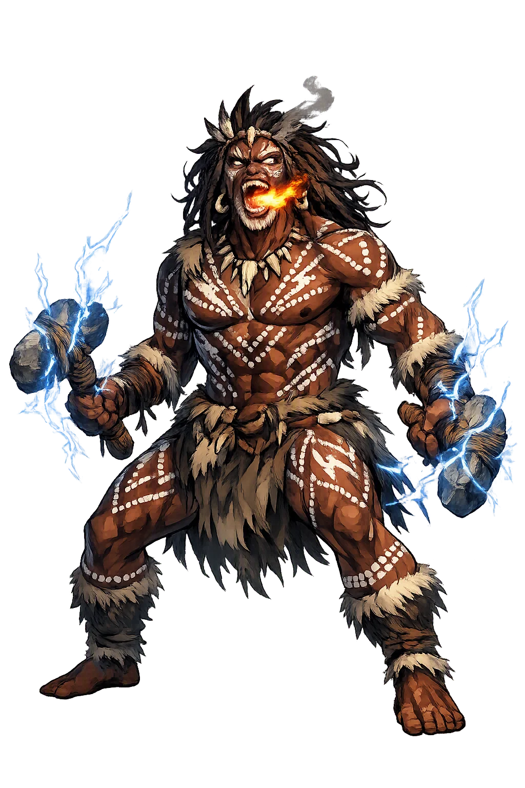
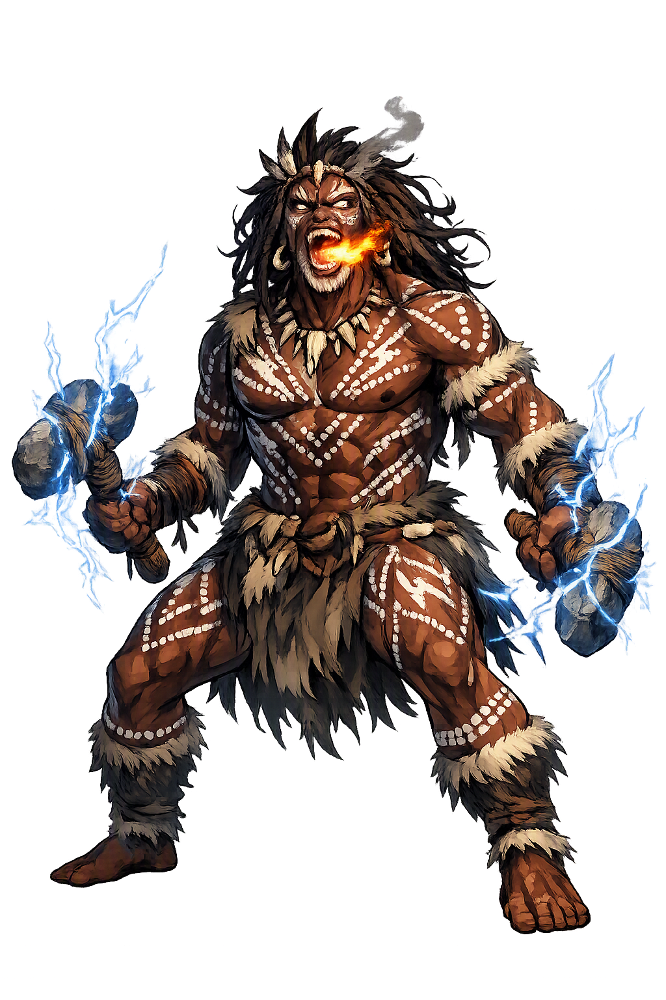

The Authentic Orthography
Lightning Man · Thunder ancestor of the western storms

Unicode restoration and ASCII comparison
Mamaragan
The name survives in scholarly transliteration. Mamaragan is the standard Aboriginal romanisation, documented in academic sources — “The lightning”. Because the spelling uses only Latin letters, the form is the same in both ASCII and Unicode.
No indigenous writing system is securely attested for individual aboriginal names. The form shown is a modern scholarly transliteration.
mamaragan
The plain mamaragan form is identical to the Unicode restoration. Because this name is already written in Latin letters, no diacritics, stress, or script information were lost — only capitalization differs.
Mamaragan
The Unicode restoration does not need to recover lost marks for Mamaragan. Its value is canonical spelling and consistent cataloguing, not the reconstruction of erased orthography. The domain is readable as-is to both DNS and humanity.
Mamaragan.com → mamaragan.com
The non-ASCII characters in Mamaragan are encoded while the ASCII remains visible. To the DNS, it is Punycode. To humanity, it is Mamaragan.
How Mamaragan is preserved in writing
No indigenous writing system is securely attested for individual aboriginal names. The form shown is a modern scholarly transliteration.
Contribute scholarly provenance →Owned, ideal, and ASCII forms of Mamaragan
Mamaragan
The full Unicode restoration. mamaragan.com is not in the PuniCodex collection — it is watched for release; if it drops, this temple upgrades to an owned flagship.
How Mamaragan was spoken
Thunder, Storm, and the Power of the Wet Season
Mamaragan is the Lightning Ancestor of western Arnhem Land, a sky being whose body is the storm and whose weapons are the lightning. In the wet season, when thunder rolls across the stone country and the sky splits with light, his presence is felt across the land. He is not merely a weather spirit; he is a living ancestor whose actions renew the country, fill the waterholes, and remind human beings of the power that moves behind the visible world.
His signature power: the bright flash that strikes from cloud to earth, carrying both danger and renewal.
The sound of his stone axes striking together, or of his voice rolling across the wet-season sky.
The storms he brings break the dry season, fill billabongs, and regenerate the plants and animals of the stone country.
A being of the upper realms, connected to the stars, clouds, and the winds that announce the monsoon.
Stories of Mamaragan
Mamaragan belongs to the Aboriginal sacred geography of western Arnhem Land. His mythology is preserved not in a single written narrative but in rock art, song cycles, dance, and the seasonal knowledge carried by senior custodians. The stories emphasize relationship: the lightning does not simply happen; it is the action of an ancestor who must be respected.
In the build-up to the wet season, the humidity gathers and the first storms roll in from the sea. Mamaragan is said to travel with these storms, his presence announced by thunder and the flash of lightning across the escarpment. The rains he brings transform the stone country: dry creek beds become running water, billabongs fill, and the country wakes from the long dry. His arrival is both welcomed and feared — the same storm that brings life can also burn a tree or strike a careless traveler.
Across western Arnhem Land, rock shelters preserve images of lightning ancestors: human-like figures with zigzag lines radiating from the head, arms, or torso. These images are not portraits in the Western sense; they are visual manifestations of ancestral power, tied to specific sites and to the right of particular clan groups to paint and sing them. Mamaragan is one of the names attached to this figure in the Kunwinjku/Kuninjku region.
The stories teach that the lightning is not random. It follows the paths of the ancestors and responds to the moral order of the country. To be out in the open during a severe storm, to mock the thunder, or to ignore the signs of the season is to risk the ancestor's anger. The myth is thus a practical ecology as much as a theology: it encodes knowledge of when to travel, when to shelter, and how to read the weather of the stone country.
Mamaragan asks us to think of weather as relationship. A lightning storm is not a meteorological event that happens to a landscape; in the Aboriginal understanding of western Arnhem Land, it is the action of an ancestor moving through country he knows intimately. The flash that splits a tree, the thunder that rolls off the escarpment, the rain that fills the billabongs — all of these are signs of a being who is present, purposeful, and powerful.
Enter Extended Lore